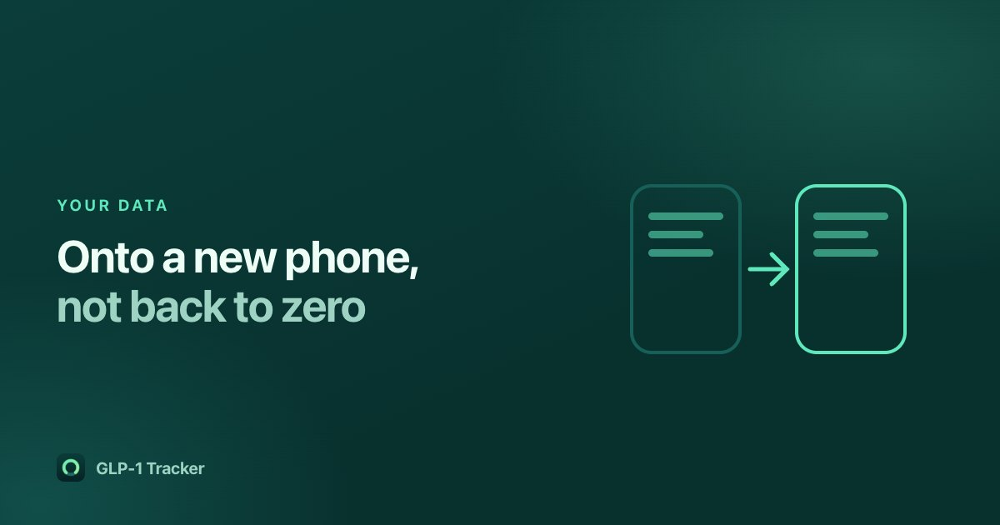

Getting your GLP-1 history onto a new phone

Of all the reviews we read across 27 GLP-1 tracking apps, the angriest are not about price or bugs. They are from people who lost their history.
"Thanks for the update it's wiped out my history for last 18 months 🤬🤬"
"Love the app but when I got a new phone there's no way to transfer all your data. The app just keeps making you start over. So I canceled my subscription."
A GLP-1 course runs for months or years. The log is the only record of what you took, when, and how you felt — and it is often the thing you want in front of you at an appointment. It is worth ten minutes of thought before you have accumulated a year of it.
The question to ask before you commit
Not "does it sync", but "can I get a file out?" Those are different promises. Sync ties your history to an account and a company; if either goes away, so does the data. A file is yours regardless.
The two useful forms are:
- A spreadsheet (CSV) — for a human. This is what you send a doctor, and a request for exactly this appears fifteen times in the reviews we read, almost always phrased as "export for my doctor".
- A full backup file that the app itself can read back. This is what actually survives a new phone. A CSV of your shots is readable, but it will not restore your course settings, your targets or your symptom history.
An app that offers neither is one you can only leave by starting over.
The privacy trade-off, stated honestly
Apps that keep everything on your device — ours included — are more private and more exposed to this particular failure, not less. There is no server holding a copy, because there is no server. If the phone goes in a river, the file you exported is the only recovery there is.
That is a real cost of local-first design and we would rather say so than pretend otherwise. The mitigation is that exporting is free, takes two taps, and produces a file you control.
A routine that takes about a minute
- Export whenever something changes that you would mind losing — a new course, a dose change, or just once a month.
- Save it somewhere that is not only on the phone. Files, iCloud Drive, a cloud drive, an email to yourself. Anywhere the phone is not the only copy.
- Before you set up a new phone, not after.
- On the new phone, install the app and restore from the file.
How it works in our app
Settings → Export your data produces a JSON backup plus a CSV per thing — shots, weight, food, water, symptoms — and hands them to the normal iOS share sheet, so you choose where they go. Nothing is uploaded; the file leaves only because you sent it somewhere.
Restore takes the JSON back. It offers to add to what is on the phone or to replace it, and it matches entries by content rather than by internal id — which means restoring the same file twice does not double your history. That sounds like a detail and is the difference between a restore and a mess.
The export contains everything, not the ninety days a free account can browse. The free tier limits what you can look at inside the app. It has never limited what you can take out of it, and it never will.
Get GLP-1 Tracker on the App Store
Common questions
How do I move my GLP-1 tracking history to a new phone?
Export a full backup file from the old phone before you switch, save it somewhere other than the phone itself, then restore it on the new one. A CSV alone is not enough — it is readable by a person but will not restore your course settings, targets and symptom history.
Can I export my GLP-1 log for my doctor?
In GLP-1 Tracker, yes: Settings → Export your data produces a spreadsheet for each of shots, weight, food, water and symptoms, plus a full backup file, handed to the normal iOS share sheet. It includes your whole history, not just the last ninety days.
Is my data uploaded anywhere?
No. GLP-1 Tracker keeps everything in a database on your phone. The only time a file leaves the device is when you export it and choose where to send it.